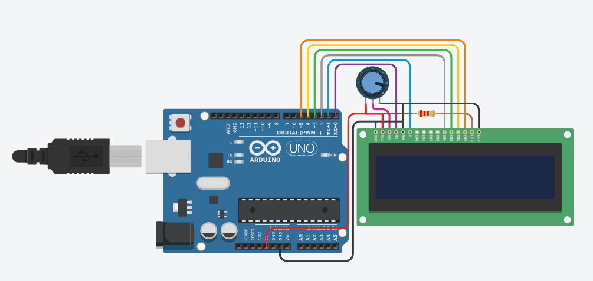

Display LCD com Mensagens

Objetivo
Aprender a utilizar um display LCD 16x2 para exibir mensagens de texto e informações, criando um sistema de exibição de mensagens personalizadas.
Materiais Necessários
- Arduino Uno (ou similar) - 1 unidade
- Display LCD 16x2 - 1 unidade
- Potenciômetro 10kΩ - 1 unidade
- Jumpers - Vários
- Protoboard - 1 unidade
- Cabo USB - 1 unidade
Passo a Passo da Montagem
Esquema das ligações:
Display LCD:
- VSS → GND
- VDD → 5V
- V0 → Terminal central do potenciômetro (para ajuste de contraste)
- RS → Pino digital 12
- RW → GND
- E → Pino digital 11
- D4 → Pino digital 5
- D5 → Pino digital 4
- D6 → Pino digital 3
- D7 → Pino digital 2
- A → 5V (backlight positivo)
- K → GND (backlight negativo)
Potenciômetro:
- Terminal 1 → 5V
- Terminal 2 (central) → V0 do LCD
- Terminal 3 → GND
Código
#include // Inclui a biblioteca para o LCD
// Inicializa a biblioteca com os pinos da interface
LiquidCrystal lcd(12, 11, 5, 4, 3, 2);
void setup() {
// Define o número de colunas e linhas do LCD
lcd.begin(16, 2);
// Imprime a mensagem inicial
lcd.print("Ola, Mundo!");
}
void loop() {
// Posiciona o cursor na coluna 0, linha 1
// (Nota: linha 1 é a segunda linha, pois a contagem começa em 0)
lcd.setCursor(0, 1);
// Imprime o número de segundos desde o reset
lcd.print("Tempo: ");
lcd.print(millis() / 1000);
lcd.print(" seg");
// Aguarda um segundo
delay(1000);
}
Explicação do Funcionamento
Este projeto demonstra como utilizar um display LCD para exibir informações:
- O display LCD 16x2 possui 16 colunas e 2 linhas para exibir caracteres.
- A biblioteca LiquidCrystal facilita o controle do display.
- O potenciômetro é usado para ajustar o contraste do display.
- Na primeira linha, é exibida a mensagem "Olá, Mundo!".
- Na segunda linha, é exibido um contador de segundos desde que o Arduino foi ligado.
- O contador é atualizado a cada segundo.
Exemplo de saída no display:
Ola, Mundo!
Tempo: 42 seg
Vídeo Demonstrativo
Dicas e Variações
Considerações importantes para este projeto:
- Se o display estiver muito claro ou escuro, ajuste o potenciômetro para melhorar o contraste.
- Você pode criar mensagens personalizadas alterando o texto no código.
- Experimente adicionar um sensor (como temperatura ou umidade) e exibir suas leituras no display.
- Para textos longos, você pode criar uma função de rolagem que move o texto pela tela.
- Existem displays LCD com módulo I2C que simplificam a conexão, usando apenas 4 fios (VCC, GND, SDA, SCL).
- Você pode criar caracteres personalizados usando a função lcd.createChar().